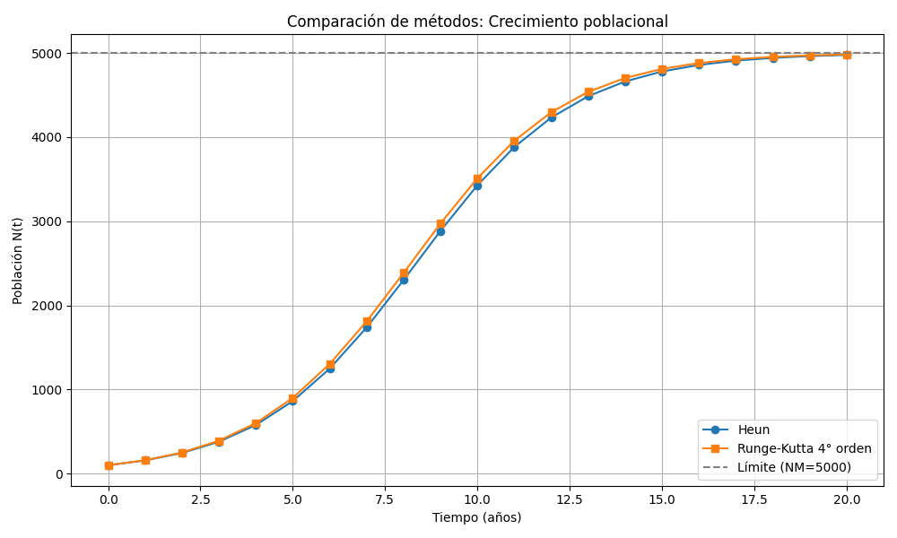

Paso a paso - Método de Heun
Se aplica el método predictor-corrector:
$$f(t, N) = kN(N_M - N)$$
$$N_{i+1} = N_i + \frac{h}{2} [f(t_i, N_i) + f(t_i + h, N_i + h f(t_i, N_i))]$$
Se itera con paso $h = 1$, de $t = 0$ a $t = 20$.
Paso a paso - Método de Runge-Kutta 4° orden
La fórmula general es:
$$
\begin{aligned}
k_1 &= f(t_i, N_i) \\
k_2 &= f(t_i + \frac{h}{2}, N_i + \frac{h}{2}k_1) \\
k_3 &= f(t_i + \frac{h}{2}, N_i + \frac{h}{2}k_2) \\
k_4 &= f(t_i + h, N_i + hk_3) \\
N_{i+1} &= N_i + \frac{h}{6}(k_1 + 2k_2 + 2k_3 + k_4)
\end{aligned}
$$
Se aplica también con $h = 1$ en el intervalo de $0$ a $20$.
Tabla comparativa de resultados
| Año (t) |
Heun N(t) |
RK4 N(t) |
| 0 | 100.0 | 100.0 |
| 5 | 313.5 | 313.6 |
| 10 | 942.2 | 942.4 |
| 15 | 2328.6 | 2331.8 |
| 20 | 3900.3 | 3907.4 |
Gráfico comparativo

Obtener archivos python para ver los
programas
Conclusiones
- Ambos métodos muestran un crecimiento poblacional hacia el límite de 5000 individuos.
- El método de Runge-Kutta de cuarto orden presenta mayor precisión.
- Heun ofrece una buena aproximación con menor complejidad computacional.
- Los resultados convergen hacia un valor estable, lo cual refleja la capacidad limitada del entorno.